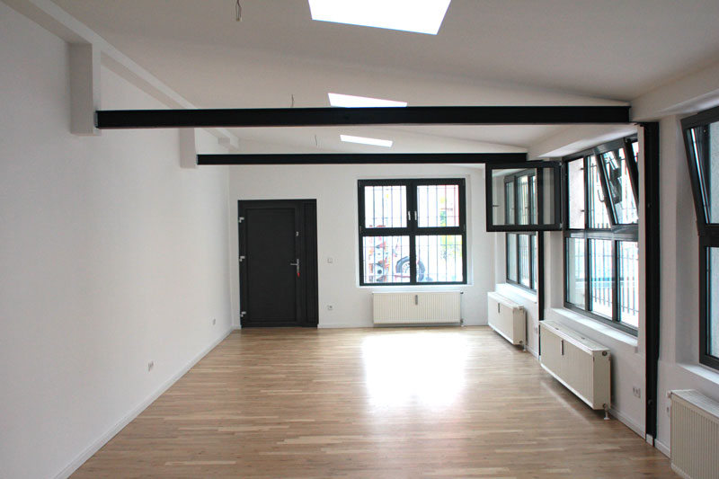
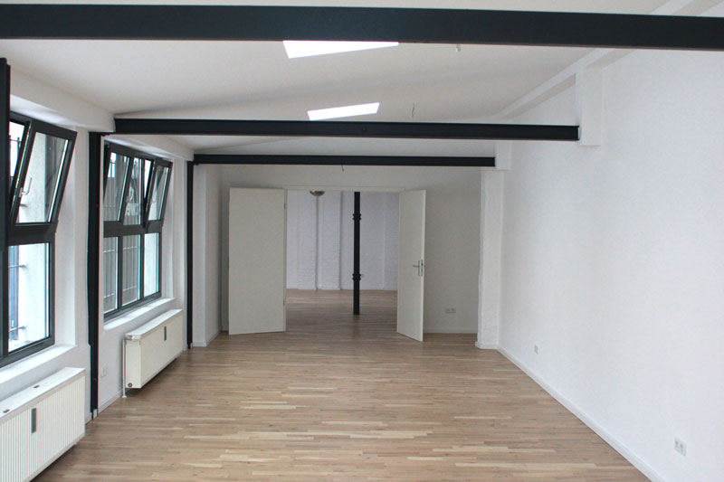
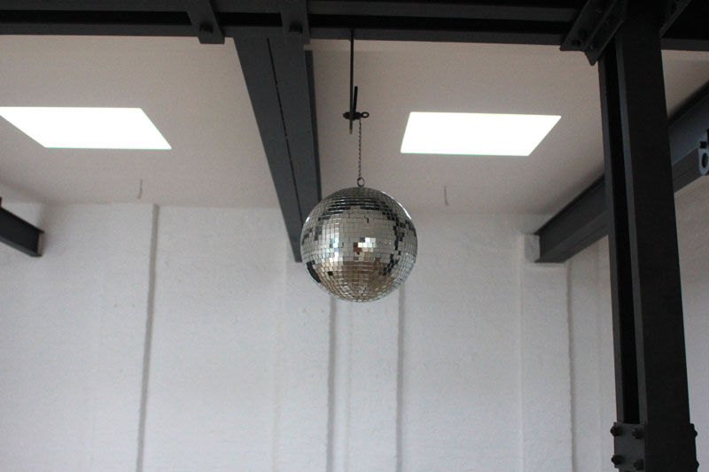
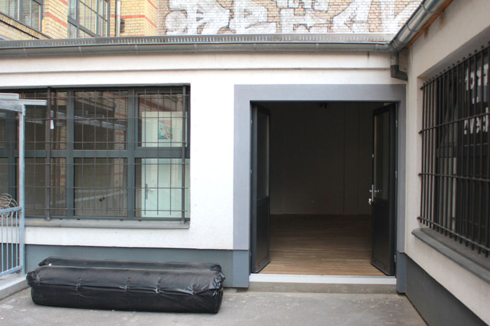
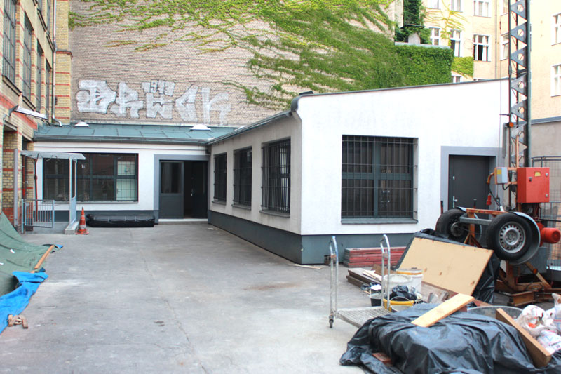
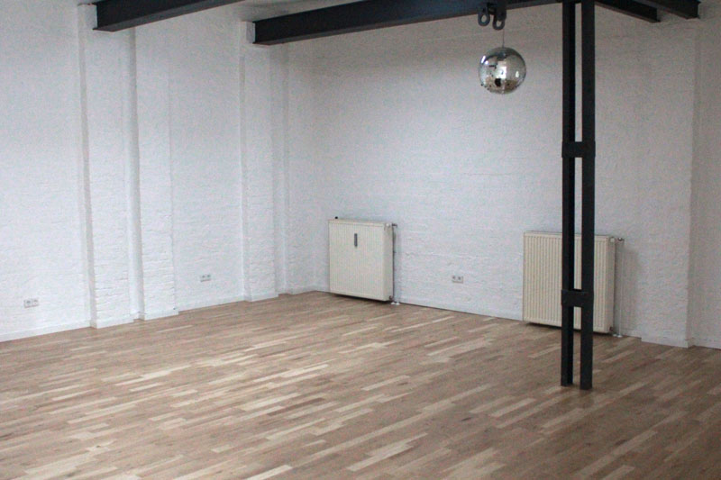

The Applied Future Studio is a shared studio space in Berlin Kreuzberg.
Glogauer Str. 21
2. HH, Remise
Glogauer Str. 19
Hinterhaus, 2. OG*
10999 Berlin
info //at// appliedfuture //dot// de
* until end of September 2013
We're moving back to our newly renovated studio and are looking for people who want to share the space with us. For a desk in the office room, access to the spaceous workshop and our nice conference room, rent will come down to less than 250€/month (exact price will be determined in the next days).
If you're interested, get in touch: info // at // appliedfuture // dot // de
     